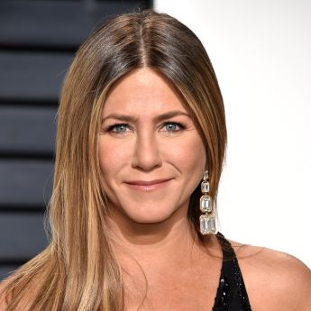

ОКСАНА БОНДАРЕНКО
Адреса вул. Паркова, буд. 3, кв. 12 04078 Київ Номер телефону +38 050 738-52-45 Email obrazets@cvmaker.com
Досвід роботи
Вчитель початкових класів
Середня загальноосвітня школа № 25, Київ
вер 2017 - теп. час
Асистент вчителя
Середня загальноосвітня школа № 25, Київ
вер 2015 - сер 2017
Освіта і кваліфікації
Спеціаліст (Початкова та дошкільна освіта)
Національний педагогічний університет імені М.П. Драгоманова, Київ
вер 2014 - лип 2015
Бакалавр (Початкова та дошкільна освіта)
Національний педагогічний університет імені М.П. Драгоманова, Київ